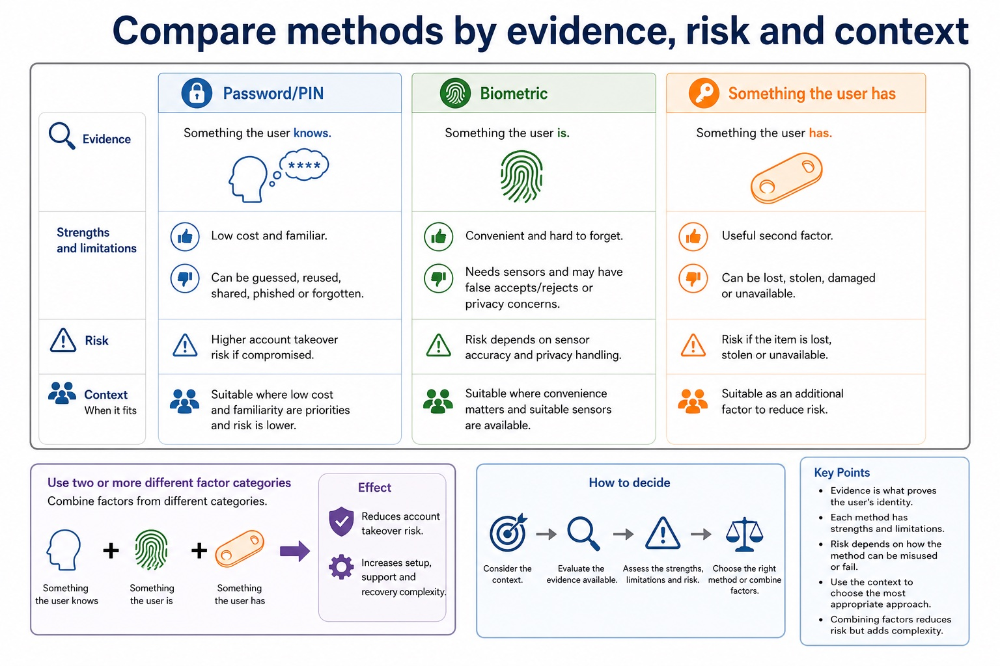
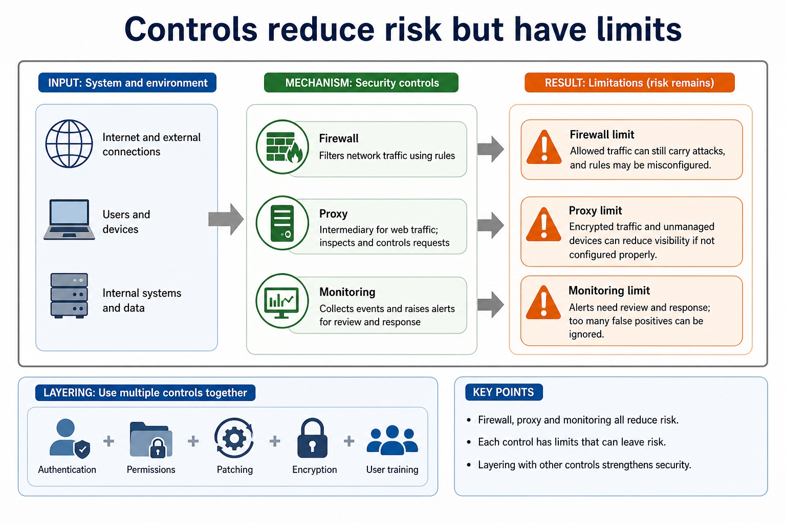
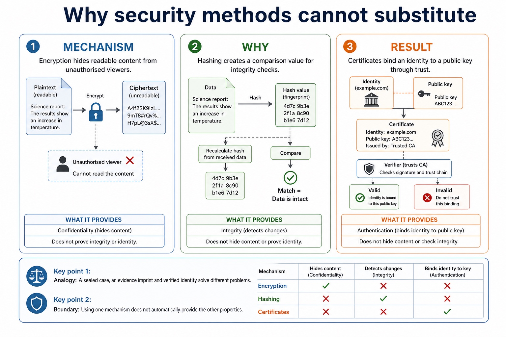
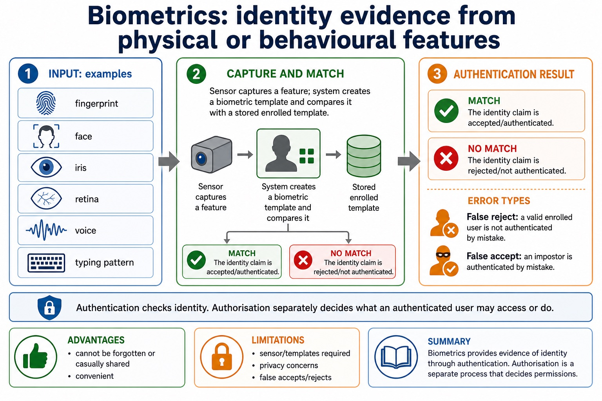
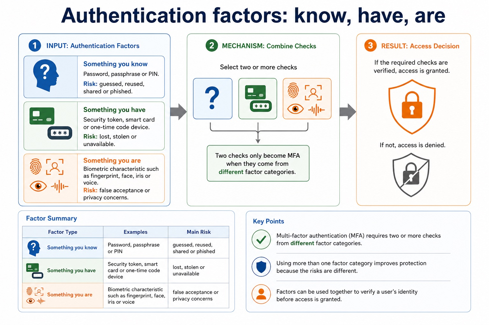
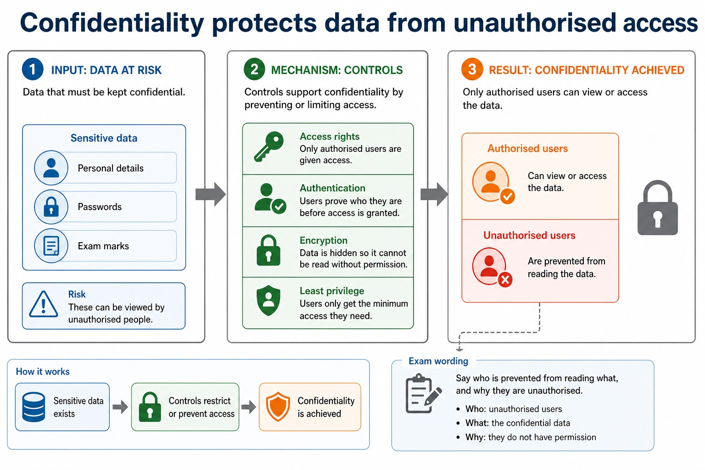
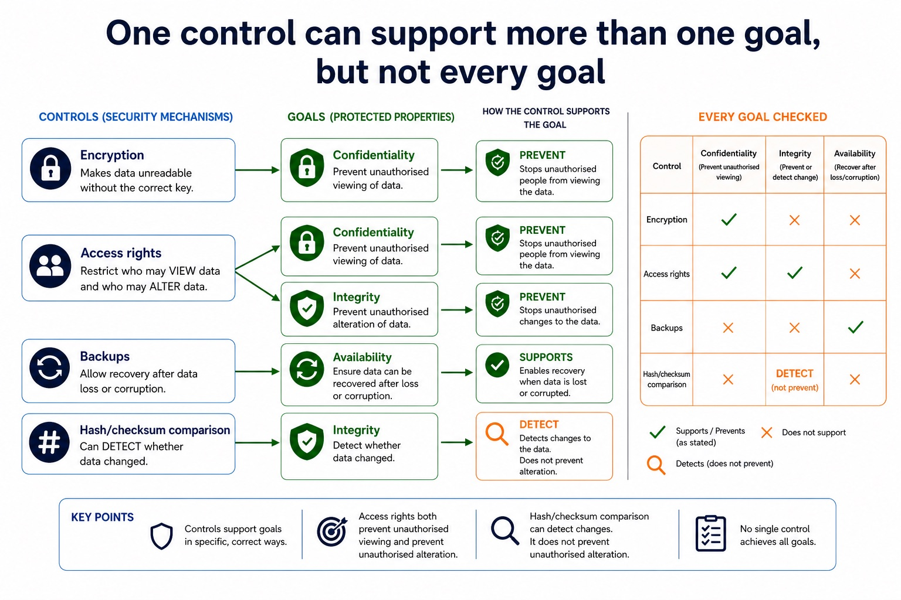
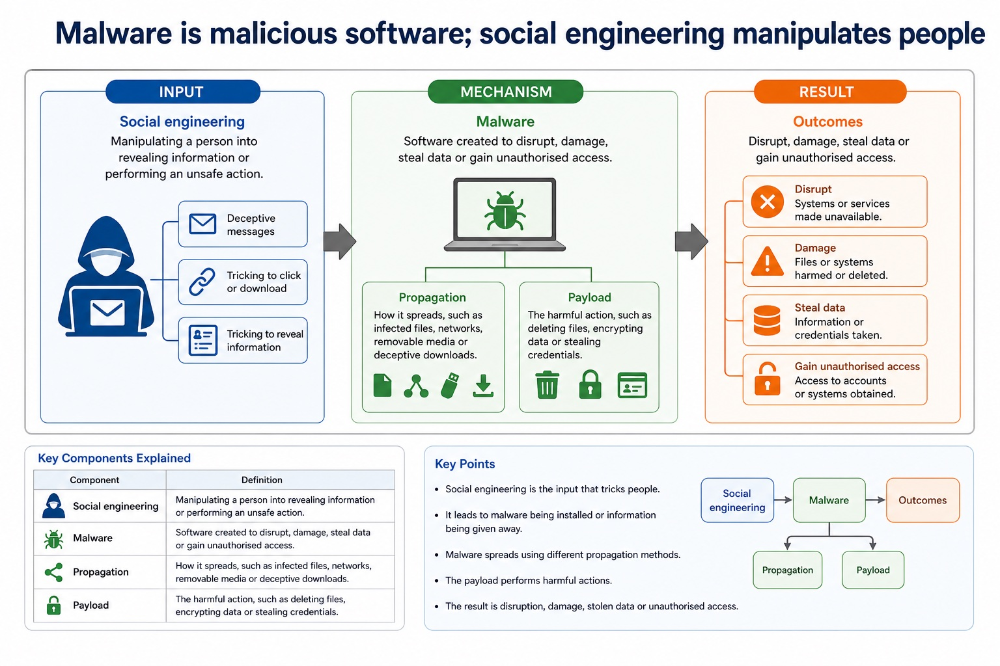

Cambridge AS9618 | Paper 1 | Section 6: Security, privacy and data integrity
Authentication, encryption and network protection
Flexible-depth lesson
S6.03, S6.06 | Learn from the diagrams, test the method, then choose the practice you need.
Choose a Quick, Full or Deep route
Quick route
Use the diagnostic, learning objectives, first worked example and foundation question. Stop once the learner can explain the central distinction accurately.
Full route
Use every knowledge-point material set, the worked method, the terminology check and all questions.
Deep route
Add the prerequisite refresher, ask learners to connect the concept checklist, discuss the labelled extension and complete a transfer question without a model answer.
Part 1 | optional depth
Prerequisite knowledge and quick diagnostic
Recall S6.05 before starting this lesson.
Give one accurate definition or method step before continuing. If it is missing, revisit only that prerequisite.
Open optional prerequisite refresher
Describe methods that restrict the risks posed by threats to data and computer systems; evidence must match each control mechanism to the attack route and avoid claims of total prevention.
Understand restriction of access to data and computer systems as a risk-reduction method.
Part 2 | knowledge-point material sets
Learn each point through visuals
Follow the map, the three-part explanation and the concrete cue. Open precise wording only after the idea is clear.
Open the concept checklist and choose what to teach
user account / user accounts
password
digital signature
biometric
firewall
anti-virus / antivirus
anti-spyware
encryption
security measure / security measures
access
rights
protect
01
S6.03 · concept
User account · Password · Digital signature · Biometric
Concept map
user accountpassworddigital signaturebiometricfirewallanti-virusanti-spywareencryptionsecurity measure
See how it works
Meaninguser accounts, passwords, digital signatures, biometrics, firewall, anti-virus, anti-spyware and encryption are all required named evidence
MechanismDescribe security measures for computer systems from a stand-alone PC to a network
ConsequenceDescribe security methods designed to protect data, including encryption and access rights
S6.03 diagrams
1 / 5
01
Comparison · 1 of 5
Compare methods by evidence, risk and context

Open text transcript
Evidence
Strengths and limitations
Password/PIN
Something the user knows.
Low cost and familiar; can be guessed, reused, shared, phished or forgotten.
Biometric
Something the user is.
Convenient and hard to forget; needs sensors and may have false accepts/rejects or privacy concerns.
02
Diagram · 2 of 5
Controls reduce risk but have limits

Open text transcript
Firewall limit Allowed traffic can still carry attacks, and rules may be misconfigured.
Proxy limit Encrypted traffic and unmanaged devices can reduce visibility if not configured properly.
Monitoring limit Alerts need review and response; too many false positives can be ignored.
Layering Use with authentication, permissions, patching, encryption and user training.
03
Process · 3 of 5
Why security methods cannot substitute

Open text transcript
Encryption hides readable content from unauthorised viewers.
Hashing creates a comparison value for integrity checks.
Certificates bind an identity to a public key through trust.
04
Comparison · 4 of 5
Biometrics: convenient identity evidence from physical or behavioural features

Open text transcript
A biometric sensor captures a physical or behavioural feature and the system compares its template with a stored enrolled template.
A match authenticates the identity claim; authorisation is a separate process that decides what an authenticated user may access or do.
A false reject denies a valid enrolled user by mistake; a false accept authenticates an impostor by mistake.
Biometrics require sensors and stored templates and may create privacy, false-accept and false-reject risks.
05
Concrete example · 5 of 5
Authentication factors: know, have, are

Open text transcript
Something you know Password, passphrase or PIN. Risk: guessed, reused, shared or phished.
Something you have Security token, smart card or one-time code device. Risk: lost, stolen or unavailable.
Something you are Biometric characteristic such as fingerprint, face, iris or voice. Risk: false acceptance or privacy concerns.
Factor type Two checks only become MFA when they come from different factor categories.
Open precise syllabus wording
Understand user accounts/passwords, digital signatures, biometrics, firewall, antivirus, anti-spyware and encryption as security measures.
Describe security measures for computer systems from a stand-alone PC to a network: user accounts, passwords, digital signatures, biometrics, firewall, anti-virus, anti-spyware and encryption are all required named evidence.
02
S6.06 · concept
Encryption · Access · Rights · Protect
Concept map
encryptionaccessrightsprotect
See how it works
MeaningDescribe security methods designed to protect data, including encryption and access rights
Mechanismevidence must explain their different mechanisms and limitations
ConsequenceEncryption therefore protects confidentiality, while access rights can protect confidentiality and integrity by preventing unauthorised viewing or alteration
S6.06 diagrams
1 / 4
01
Process · 1 of 4
Confidentiality protects data from unauthorised access

Open text transcript
Goal Only authorised users should be able to view or access the data.
Risk Personal details, passwords or exam marks are viewed by unauthorised people.
Controls Access rights, authentication, encryption and least privilege can support confidentiality.
Exam wording Say who is prevented from reading what, and why they are unauthorised.
02
Diagram · 2 of 4
How encryption protects confidentiality
Open text transcript
An algorithm combines plaintext with a key.
The output is ciphertext that lacks readable meaning without the key.
An authorised key reverses the transformation for the recipient.
03
Concrete example · 3 of 4
One control can support more than one goal, but not every goal

Open text transcript
Encryption makes data unreadable without the correct key and supports confidentiality.
Access rights prevent unauthorised viewing and prevent unauthorised alteration; they support confidentiality and integrity but do not detect whether data changed.
Backups allow recovery after data loss or corruption and support availability.
Hash/checksum comparison can detect whether data changed and supports integrity, but it does not prevent unauthorised alteration.
04
Comparison · 4 of 4
Similar-looking controls: choose by mechanism
Open text transcript
Difference
Common error
Validation vs verification
Validation checks rule acceptability; verification checks accurate transfer/copying.
A valid value can still be the wrong value.
Authentication vs authorisation
Authentication confirms identity; authorisation/access rights decide permitted actions.
Logging in does not mean full access should be granted.
Open precise syllabus wording
Explain how encryption and access rights protect data.
Describe security methods designed to protect data, including encryption and access rights; evidence must explain their different mechanisms and limitations.
Supporting diagram library
1 / 29
01
Diagram · 1 of 29
Malware is malicious software; social engineering manipulates people

Open text transcript
Malware Software created to disrupt, damage, steal data or gain unauthorised access.
Payload The harmful action, such as deleting files, encrypting data or stealing credentials.
Propagation How it spreads, such as infected files, networks, removable media or deceptive downloads.
Social engineering Manipulating a person into revealing information or performing an unsafe action.
02
Diagram · 2 of 29
Match controls to mechanism, not just the word "malware"
03The school's boundary firewall denies unrequested external traffic, permits web traffic under ordered rules and logs repeated blocked attempts.
04Anti-virus still scans downloaded files, and account/access controls still decide who may use data after traffic is allowed.
Open precise terminology and exam facts
Describe security measures for computer systems from a stand-alone PC to a network: user accounts, passwords, digital signatures, biometrics, firewall, anti-virus, anti-spyware and encryption are all required named evidence.
Describe security methods designed to protect data, including encryption and access rights; evidence must explain their different mechanisms and limitations.
A virus is malware that attaches to a host file or program and spreads when the infected host is run or shared. Spyware secretly monitors activity or collects data, such as keystrokes, credentials or browsing behaviour. These threats can damage the security of both data and the computer system.
Anti-virus software scans files, memory and activity for virus signatures or suspicious behaviour, then blocks, quarantines or removes detected malicious code. Anti-spyware performs corresponding detection and removal for spyware; the categories may be combined in one security product, but their syllabus roles must still be stated accurately.
Anti-virus and anti-spyware definitions and detection rules must be updated because new threats appear. Both measures reduce risk but cannot guarantee detection of every new, modified or concealed threat.
Each security measure has a distinct mechanism: a user account identifies a user; a password authenticates knowledge; a digital signature supports integrity and origin checks; a biometric compares a captured feature; a firewall filters traffic; anti-virus and anti-spyware detect known malicious software; encryption protects readable data. The threats include a virus, spyware, a hacker, phishing and pharming; each threat must be matched to a control whose mechanism reduces that risk.
A user account gives an individual or role a distinct system identity and supports accountability. A password is secret knowledge used to authenticate an identity claim. Accounts should not be shared; passwords should be difficult to guess, stored as salted hashes, protected by attempt limits and changed if compromised.
Biometrics use a physical or behavioural characteristic such as fingerprint, face, iris, retina, voice or typing pattern. A captured feature is converted to a template and compared with an enrolled template. A match authenticates the identity claim; authorisation is the separate decision about what that user may access or do.
False rejection denies a valid enrolled user by mistake; false acceptance authenticates an impostor by mistake. Biometrics can be convenient and cannot be casually shared like a password, but require sensors/templates, may raise privacy concerns and cannot normally be replaced as easily as a compromised password.
Access rights restrict authorised actions on resources. Read permission controls viewing; write/modify controls alteration; delete controls removal; execute or administrative rights control running software or changing system settings. Least privilege grants only the permissions needed for a role and removes temporary rights when no longer required.
Encryption transforms plaintext into ciphertext using an algorithm and key. Without the correct decryption key, intercepted or stolen ciphertext should not reveal readable content. Encryption therefore protects confidentiality, while access rights can protect confidentiality and integrity by preventing unauthorised viewing or alteration.
The methods do different jobs: encryption does not decide which logged-in user may edit a record, and access rights do not make a stolen unencrypted copy unreadable. Neither method guarantees availability, data truth or protection after an authorised account is misused.
Beyond syllabus / 延伸知识（不要求背诵）
real security uses defence in depth, combining controls so that one failed control does not expose the whole system.
Part 3 | select by learner need
Practice by question type
describeexplainfoundation6 marks
Question 1. Describe how a firewall can protect both a stand-alone PC and a network, then explain two limitations that require other security measures.
Show answer and marking guidance
Answer: firewall compares traffic/connection information with configured rules; allows/blocks/rejects/logs according to a rule; host firewall protects one PC; network firewall protects a network boundary; allowed traffic or misconfiguration limitation; matching additional measure such as anti-virus, authentication, access rights or user training
Marking guidance: Do not claim that a firewall removes viruses, detects every malicious payload or makes a computer system completely secure.
Common error: For the command word describe, perform that exact action; do not replace it with an unrelated fact.
applyrecallapplication2 marks
Question 2. What is the purpose of a user account?
Show answer and marking guidance
Answer: It provides a distinct identity for authentication, access control and accountability.
Marking guidance: Award one mark for each distinct, technically accurate point or method step.
Common error: Do not repeat the same point in different words; each mark needs a separate idea or method step.
applyrecalltransfer2 marks
Question 3. Does successful authentication decide every permitted action?
Show answer and marking guidance
Answer: No. Authorisation/access rights separately decide what the authenticated user may access or do.
Marking guidance: Award one mark for each distinct, technically accurate point or method step.
Common error: Do not copy the worked example unchanged; transfer the method and check it against the new context.
Related past-paper indexes
Reference
Marks
Command word
Question type
9618/12/S/24 Q3(b)
4
complete
recall
9618/12/S/24 Q3(i)
3
describe
explain
9618/12/S/24 Q3(ii)
3
describe
explain
9618/13/S/23 Q6(a)
5
explain
explain
Index only: Cambridge question and mark-scheme wording is not reproduced on this public course page.
Part 4 | close when ready
Summary and exam reminders
Summary
Define authentication, encryption and network protection with the exact technical vocabulary expected by the syllabus.
Use the lesson method on a fresh context and show the intermediate decision, representation or calculation.
Match the shape of the answer to the command word and the available marks.
Check the final answer against the scenario instead of repeating a memorised sentence.
Common error to correct
Students often propose encryption for every problem. Correction: encryption protects confidentiality but does not fix poor permissions, phishing or missing backups.
Exam technique
Follow the command word: state gives a fact; explain links a cause to a consequence; compare covers both sides.
Match the number of independent points or method steps to the available marks.
For authentication, encryption and network protection, use the exact technical term before applying it to the scenario.